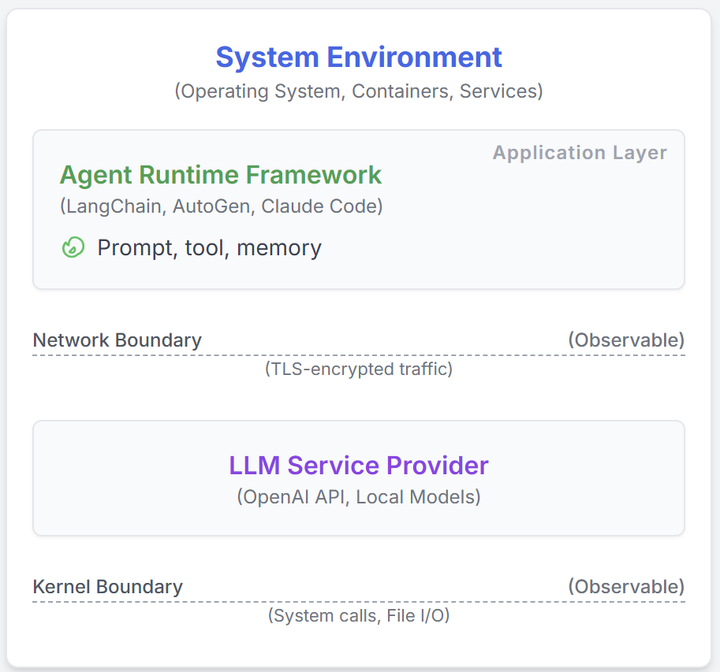
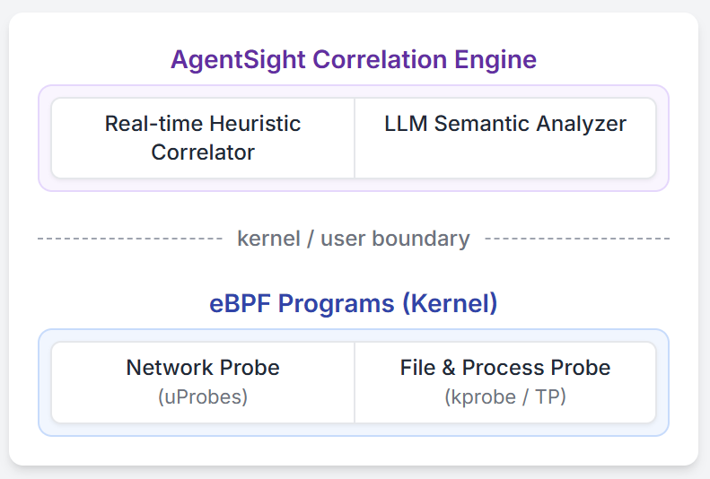

AgentSight: 讓 AI Agent 的一舉一動都在掌控之中，基於 eBPF 的系統級可觀測性方案
想象一下，當你的 AI Agent 正在自主編寫代碼、執行命令時，你卻不知道它究竟在做什麼，或許有點令人不安？隨著 Claude Code、Gemini-cli 等 LLM 智能體工具的普及，我們正在將越來越多的控制權交給 AI。但這裡有個棘手的問題：這些 AI 智能體與傳統軟件截然不同，現有的監控工具要麼只能看到它們的"想法"（LLM 提示詞），要麼只能看到它們的"行動"（系統調用），卻無法將兩者聯繫起來。就像你只能聽到一個人在說什麼，或者只能看到他在做什麼，卻不知道言行之間的聯繫。這個盲區讓我們難以判斷 AI 是在正常工作、遭受攻擊還是陷入了昂貴的死循環。
這就是我們開發 AgentSight 的初衷，我們用 eBPF 在系統邊界處巧妙地監控 AI Agent 的一舉一動。AgentSight 能夠攔截加密的 LLM 通信來理解 AI 的意圖，同時監控內核事件來追蹤它的實際行為，然後用智能引擎將這兩條線索關聯起來，形成完整的因果鏈。最棒的是，這一切都不需要修改你的代碼，不依賴特定框架，性能開銷還不到 3%！在實際測試中，AgentSight 成功檢測出了提示注入攻擊，及時發現了燒錢的推理死循環，還幫助我們找到了多智能體協作中的性能瓶頸。AgentSight 已經開源，歡迎來 https://github.com/agent-sight/agentsight 體驗！論文的 arxiv 版本在 https://arxiv.org/abs/2508.02736 。
引言
我們正在見證一場革命：AI 不再只是輔助工具，而是真正的系統參與者。想想看，當你使用 Claude Code、Cursor Agent 或 Gemini-cli 時，你實際上是在讓 AI 直接操作你的系統，創建進程、修改文件、執行命令。這些 AI Agent 可以獨立完成複雜的軟件開發和系統維護任務，這很酷，但也帶來了一個令人頭疼的問題：我們正在部署的是非確定性的 ML 系統，這給系統的可靠性、安全性和可驗證性帶來了前所未有的挑戰。
最大的問題在於一個關鍵的語義鴻溝：AI Agent 想做什麼（意圖）和它實際做了什麼（系統動作）之間存在斷層。傳統程序的執行路徑是可預測的，但 AI Agent 會動態生成代碼、創建各種子進程，讓現有的監控工具完全摸不著頭腦。舉個讓人細思極恐的例子：假設有個 AI Agent 正在幫你重構代碼，它在搜索 API 文檔時不小心從外部網站讀取到了惡意提示，結果悄悄在你的代碼裡植入了後門（這就是間接提示注入攻擊）。應用層監控只能看到一個"成功執行腳本"的記錄，系統監控只能看到一個 bash 進程在寫文件，誰都意識不到原本的良性操作已經變成了惡意行為，監控工具都成了"睜眼瞎"。
現有的解決方案都卡在了語義鴻溝的某一邊。像 LangChain 和 AutoGen 這類框架採用應用層插樁，能捕獲 AI 的推理過程和工具調用。雖然它們能看到 AI 的意圖，但這種方法太脆弱了：需要不斷追著 API 更新跑，而且輕易就能被繞過，一個簡單的 shell 命令就能讓它們失明。另一邊，通用系統級監控倒是能看到所有動作，每個系統調用、每次文件訪問都逃不過它的眼睛，但問題是它完全不懂上下文。在它看來，一個正在寫數據分析腳本的 AI 和一個正在植入惡意代碼的 AI 沒有任何區別。不瞭解背後的 LLM 指令，不知道"為什麼"，只看到"做了什麼"，這些底層事件流就像天書一樣難懂。
我們提出了一種全新的監控方法，專門用來彌合這個語義鴻溝。核心洞察很簡單：雖然 AI Agent 的內部實現和框架千變萬化，但它們與外界交互的接口（內核系統調用、網絡通信）是穩定且無法繞過的。通過在這些系統邊界上進行監控，我們就能同時捕獲 AI 的高層意圖和底層系統行為。AgentSight 正是基於這個理念，用 eBPF 技術在系統邊界處監控：攔截加密的 LLM 通信來獲取意圖，監控內核事件來追蹤實際行為。最精妙的是我們的兩階段關聯機制：實時引擎先把 LLM 響應和它觸發的系統行為關聯起來，然後讓一個"觀察者" LLM 來分析這些關聯數據，推斷潛在風險並解釋為什麼某個行為序列是可疑的。這種方案不需要改你的代碼，不依賴特定框架，性能開銷還不到 3%，已經成功檢測出提示注入攻擊、推理死循環和多智能體協作瓶頸。
背景與相關工作
在深入技術細節之前，讓我們先了解一下 LLM 智能體的工作原理，看看現有的監控方案為什麼不夠用，以及 eBPF 技術如何成為我們的秘密武器。
現在的 AI Agent 系統基本都遵循一個通用架構，主要包含三大件：（1）負責"思考"的 LLM 後端，（2）負責"執行"的工具框架，（3）負責協調的控制循環。無論是 LangChain、AutoGen、Cursor Agent、Gemini-cli 還是 Claude Code，都是這個模式的變體。這種架構賦予了 AI Agent 強大的能力：你只需要用自然語言描述目標，它就能自主制定計劃並執行，比如自己寫代碼分析數據、調試程序，甚至重構整個項目。
目前的監控方案各有各的盲區。一類是專注於"意圖"的工具，像 Langfuse、LangSmith 和 Datadog 這些，它們能很好地追蹤 AI 的推理過程和應用層事件，甚至有 OpenTelemetry GenAI 工作組在推動標準化。但問題是，一旦 AI 執行了外部命令或創建了子進程，這些工具就兩眼一抹黑了。另一類是專注於"動作"的系統監控工具，比如 Falco 和 Tracee，它們能看到每一個系統調用，但完全不懂這些動作背後的含義，分不清 AI 是在正常工作還是在搞破壞。還有一些研究嘗試讓 AI 的思維過程更透明，但它們主要關注 LLM 本身的可解釋性，並沒有解決 AI 意圖與系統行為之間的斷層問題。
要同時監控網絡通信和內核活動，我們需要一個既安全又高效的技術，eBPF（擴展伯克利包過濾器）正好滿足所有要求。雖然 eBPF 最初只是用來過濾網絡包的，但現在它已經進化成了一個強大的內核虛擬機，支撐著許多現代監控和安全工具。對於 AI Agent 監控來說，eBPF 簡直是完美選擇：它能在系統邊界處精確觀察，既能攔截 TLS 加密的 LLM 通信獲取意圖，又能監控系統調用追蹤動作，而且性能開銷極低。更重要的是，eBPF 有內核級的安全保障，包括驗證程序終止性和內存安全，這讓它可以安心用在生產環境。
設計
AgentSight 的核心設計目標很明確：讓 AI Agent 的意圖和動作能夠對應起來。我們通過在系統邊界進行監控，配合多信號關聯引擎來實現這個目標。
守住關鍵路口
我們發現了一個關鍵規律：無論 AI Agent 內部怎麼變化，它與外界交互的"關口"是固定的，主要就是兩個地方：與 LLM 通信的網絡邊界，以及執行系統操作的內核邊界（如圖 1）。守住這兩個關口，我們就能捕獲完整的行為鏈。這種方法的優勢在於：首先是全覆蓋，從進程創建到文件讀寫，任何系統操作都逃不過內核的眼睛，即使 AI 創建了子進程也一樣；其次是穩定可靠，系統調用接口和網絡協議的變化速度遠比 AI 框架慢得多，這讓我們的方案更持久。最重要的是，這種方式不依賴 AI Agent 的"自覺"，而是在系統邊界上強制監控，更加安全可靠。

圖 1：智能體框架概覽AgentSight 的架構設計很巧妙，同時在兩個關鍵邊界佈防。如圖 2 所示，我們用 eBPF 技術部署了無侵入的探針：一邊從 SSL 函數截獲解密後的 LLM 通信（包括提示詞和響應），瞭解 AI 的意圖；另一邊從內核監控系統調用和進程事件，追蹤實際行為。然後，我們的關聯引擎會把這兩條線索串聯起來，形成完整的因果鏈。

圖 2：AgentSight 系統架構讓 AgentSight 如此強大的幾個關鍵設計：
eBPF 提供安全高效的探測能力： 我們選擇 eBPF 不是偶然的，它兼具生產級安全性、極高性能，還能同時訪問用戶空間和內核數據。通過直接攔截 AI Agent 與 LLM 的解密通信，比傳統的網絡抓包或代理方案更高效、更簡潔。
多信號關聯引擎串聯因果鏈： 這是整個系統的大腦，負責把意圖和動作關聯起來。我們採用了三重關聯機制：（1）進程血緣追蹤，通過監控 fork 和 execve 構建完整的進程樹，讓子進程的行為也能追溯到源頭；（2）時間關聯，把 LLM 響應後短時間內發生的動作關聯起來；（3）內容匹配，直接匹配 LLM 響應中提到的文件名、URL、命令等與實際系統調用參數。三管齊下，讓 AI 的意圖和行為之間的因果關係無處遁形。
"AI 監督 AI"的語義分析： 傳統的基於規則的檢測太死板，我們讓另一個 LLM 來當"安全分析師"。把關聯好的事件追蹤餵給它，利用 LLM 理解複雜語義、推斷因果關係的能力，發現那些不符合預定義模式的異常行為。這種"以 AI 制 AI"的方法，讓 AgentSight 的檢測能力更加智能和靈活。
實現
AgentSight 的實現包括一個用 Rust/C 編寫的用戶空間守護進程（6000 行代碼）來協調 eBPF 程序，加上一個 TypeScript 前端（3000 行）用於可視化分析。整個系統為高性能而生，能夠實時處理海量的內核事件並轉換成人類可讀的追蹤數據。
在邊界處佈下天羅地網
我們的 eBPF 探針就像兩個哨兵，分別守在不同的關口。第一個哨兵通過 uprobes 掛載到 OpenSSL 等加密庫的 SSL_read/SSL_write 函數上，截獲解密後的 LLM 通信內容。為了處理像 SSE 這樣的流式協議，我們還實現了智能的數據重組機制。第二個哨兵則守在內核層，通過 sched_process_exec 等追蹤點構建進程樹，用 kprobes 監控 openat2、connect、execve 等關鍵系統調用。為了避免數據洪流，我們在內核層就進行精準過濾，只把目標 AI Agent 的事件送到用戶空間，大大減少了性能開銷。
兩階段關聯引擎：從數據到智能
我們用 Rust 實現的關聯引擎分兩步走。第一步是實時處理：從 eBPF 環形緩衝區讀取事件，補充上下文信息（比如把文件描述符轉換成實際路徑），維護進程樹狀態，並在 100-500 毫秒的時間窗口內進行因果關聯。第二步是語義分析：把關聯好的事件整理成結構化日誌，構造精心設計的提示詞，讓輔助 LLM 扮演"安全分析師"角色進行深度分析。LLM 會輸出自然語言的分析結果和風險評分。為了控制延遲和成本，我們採用異步處理和優化的提示工程技術。
評估
我們主要想驗證兩件事：AgentSight 會不會拖慢系統？它能不能真正發現問題？
我們在真實環境中測試了 AgentSight 的性能影響。測試環境是 Ubuntu 22.04（Linux 6.14.0）服務器，用 Claude Code 1.0.62 作為測試對象。我們選了三個典型的開發場景，都基於這個教程倉庫：讓 AI 理解整個代碼庫（/init 命令）、生成 bpftrace 腳本、並行編譯整個項目。每個場景都測試了 3 次，對比開啟和關閉 AgentSight 的運行時間。
| 任務 | 基準線 (秒) | AgentSight (秒) | 開銷 |
|---|---|---|---|
| 理解倉庫 | 127.98 | 132.33 | 3.4% |
| 代碼編寫 | 22.54 | 23.64 | 4.9% |
| 倉庫編譯 | 92.40 | 92.72 | 0.4% |
表 1：AgentSight 引入的開銷
結果很令人滿意！如表 1 所示，AgentSight 的平均性能開銷只有 2.9%，幾乎感覺不到。最重的代碼編寫場景也只慢了不到 5%，而編譯這種 I/O 密集型任務幾乎沒影響。
我們通過三個真實案例來展示 AgentSight 的威力。
案例 1：抓住提示注入攻擊
我們模擬了一個間接提示注入攻擊場景。一個數據分析 AI Agent 收到了看似正常的任務請求，但其中暗藏惡意指令，最終誘導它洩露了系統的 /etc/passwd 文件。
AgentSight 完美捕獲了整個攻擊過程：從 AI 與惡意網頁的初始交互，到創建子進程、建立可疑連接，再到最終讀取敏感文件，整條攻擊鏈清清楚楚。我們的"安全分析師" LLM 看到這些關聯數據後，立即給出了最高風險評分（5/5）。它的分析一針見血：一個聲稱要"分析銷售數據"的 AI，卻在執行 shell 命令讀取系統密碼文件，還連接到陌生域名，這明顯是提示注入攻擊的典型特徵。這個案例完美展示了意圖和動作關聯的價值。
案例 2：及時止損的推理死循環
一個 AI Agent 在處理複雜任務時犯了個常見錯誤：用錯參數調用命令行工具。更糟的是，它沒能從錯誤中學習，而是不斷重複同樣的錯誤命令。
AgentSight 的實時監控立即發現了異常：短時間內 12 次 API 調用，都在重複同樣的模式。"安全分析師" LLM 一眼看出了問題所在：AI 陷入了"嘗試-失敗-再嘗試"的死循環，每次都執行同樣的錯誤命令，收到同樣的報錯，卻始終沒能理解錯誤信息。在循環了 3 輪（可配置的閾值）後，系統自動觸發了警報。這時 AI 已經燒掉了 4,800 個 token，相當於 2.40 美元。及時的干預避免了更大的損失，這就是智能監控的價值所在。
案例 3：揭秘多 Agent 協作瓶頸
我們監控了一個由三個 AI Agent 組成的開發團隊，它們協作完成軟件開發任務。AgentSight 記錄了驚人的 12,847 個事件，從中發現了有趣的協作模式：Agent B 有 34% 的時間在等待 Agent A 完成設計，而 A 的頻繁修改又導致 B 不斷返工。通過分析，我們發現雖然這些 AI 自發形成了一些協調機制，但如果採用更明確的協作策略，可以減少總運行時間。這個案例展示了系統邊界監控的獨特價值：傳統的應用層監控根本看不到這種跨進程的協作動態。
結論
AI Agent 正在改變軟件開發和系統運維的方式，但它們的不可預測性和複雜性也帶來了前所未有的挑戰。AgentSight 通過在系統邊界進行創新的監控，成功解決了 AI 意圖與系統行為之間的斷層問題。
我們用 eBPF 在系統邊界上佈下天羅地網，既能截獲加密的 LLM 通信瞭解 AI 在"想什麼"，又能監控內核事件追蹤 AI 在"做什麼"，然後用智能的關聯引擎把兩者串聯起來。實踐證明，AgentSight 不僅能有效檢測提示注入攻擊、發現推理死循環、優化多 Agent 協作，而且性能開銷不到 3%，真正做到了"看得清、管得住、不拖累"。
這種"以 AI 制 AI"的監控方案，為 AI Agent 的安全部署提供了堅實保障。隨著 AI Agent 變得越來越強大和自主，像 AgentSight 這樣的可觀測性工具將變得越來越重要。我們相信，只有真正理解和掌控 AI 的行為，才能放心地讓它們承擔更多責任。
AgentSight Github： https://github.com/agent-sight/agentsight
參考文獻
-
claudecode: Anthropic. "Introducing Claude Code." Anthropic Blog, Feb 2025. https://www.anthropic.com/news/claude-code
-
cursor: Anysphere Inc. "Cursor: The AI‑powered Code Editor." 2025. https://cursor.com/
-
geminicli: Mullen, T., Salva, R.J. "Gemini CLI: Your Open‑Source AI Agent." Google Developers Blog, Jun 2025. https://blog.google/technology/developers/introducing-gemini-cli-open-source-ai-agent/
-
indirect-prompt-inject: Zhan, Q., Liang, Z., Ying, Z., Kang, D. "InjecAgent: Benchmarking Indirect Prompt Injections in Tool-Integrated Large Language Model Agents." ACL Findings, 2024. https://arxiv.org/abs/2403.02691
-
langchain: Chase, H. "LangChain: Building applications with LLMs through composability." 2023. https://github.com/langchain-ai/langchain
-
autogen: Wu, Q., et al. "AutoGen: Enable Next-Gen Large Language Model Applications." Microsoft Research, 2023. https://github.com/microsoft/autogen
-
Maierhofer2025Langfuse: Maierhöfer, J. "AI Agent Observability with Langfuse." Langfuse Blog, March 16, 2025. https://langfuse.com/blog/2024-07-ai-agent-observability-with-langfuse
-
langfuse: "Langfuse - LLM Observability & Application Tracing." 2024. https://langfuse.com/
-
langsmith: LangChain. "Observability Quick Start - LangSmith." 2023. https://docs.smith.langchain.com/observability
-
Datadog2023Agents: Datadog Inc. "Monitor, troubleshoot, and improve AI agents with Datadog." Datadog Blog, 2023. https://www.datadoghq.com/blog/monitor-ai-agents/
-
helicone: "Helicone / LLM-Observability for Developers." 2023. https://www.helicone.ai/
-
Liu2025OTel: Liu, G., Solomon, S. "AI Agent Observability -- Evolving Standards and Best Practices." OpenTelemetry Blog, March 6, 2025. https://opentelemetry.io/blog/2025/ai-agent-observability/
-
Bandurchin2025Uptrace: Bandurchin, A. "AI Agent Observability Explained: Key Concepts and Standards." Uptrace Blog, April 16, 2025. https://uptrace.dev/blog/ai-agent-observability
-
Dong2024AgentOps: Dong, L., Lu, Q., Zhu, L. "AgentOps: Enabling Observability of LLM Agents." arXiv preprint arXiv:2411.05285, 2024.
-
Moshkovich2025Pipeline: Moshkovich, D., Zeltyn, S. "Taming Uncertainty via Automation: Observing, Analyzing, and Optimizing Agentic AI Systems." arXiv preprint arXiv:2507.11277, 2025.
-
falco: The Falco Authors. "Falco: Cloud Native Runtime Security." 2023. https://falco.org/
-
tracee: Aqua Security. "Tracee: Runtime Security and Forensics using eBPF." 2023. https://github.com/aquasecurity/tracee
-
Rombaut2025Watson: Rombaut, B., et al. "Watson: A Cognitive Observability Framework for the Reasoning of LLM-Powered Agents." arXiv preprint arXiv:2411.03455, 2025.
-
Kim2025AgenticInterp: Kim, B., et al. "Because we have LLMs, we Can and Should Pursue Agentic Interpretability." arXiv preprint arXiv:2506.12152, 2025.
-
brendangregg: Gregg, B. "BPF Performance Tools." Addison-Wesley Professional, 2019.
-
ebpfio: eBPF Community. "eBPF Documentation." 2023. https://ebpf.io/
-
cilium: Cilium Project. "eBPF-based Networking, Observability, and Security." 2023. https://cilium.io/
-
kerneldoc: Linux Kernel Community. "BPF Documentation - The Linux Kernel." 2023. https://www.kernel.org/doc/html/latest/bpf/
-
ebpftutorial: eunomia-bpf. "eBPF Developer Tutorial." GitHub, 2024. https://github.com/eunomia-bpf/bpf-developer-tutorial